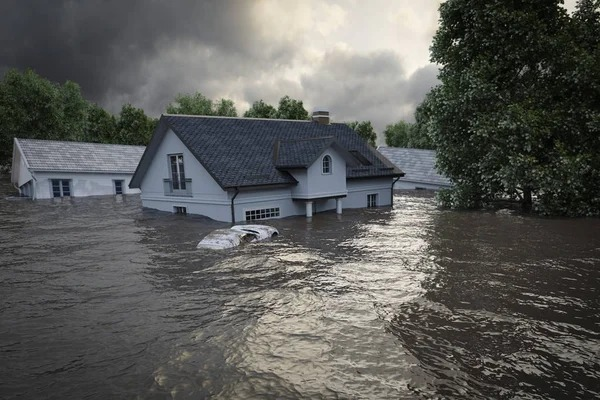

Sel Afeti Nedir?

Sel, ani ve aşırı yağışlar, nehir taşkınları veya deniz suyu yükselmesi sonucu oluşan, kara alanlarının suyla kaplanmasıdır. Sel, çevreyi tahrip edebilir, evleri, altyapıyı ve tarım alanlarını ciddi şekilde etkileyebilir. Ayrıca, insan hayatını tehdit eden büyük bir felakettir.
📌 Türkiye, özellikle büyük nehir havzalarına sahip ve yüksek yağış alan bölgeleriyle, sel riski altında bir ülkedir.
Sel Öncesinde Ne Yapmalıyım?
Sel felaketinden korunmak için alınması gereken önlemler, olası bir sel sırasında zararları azaltabilir:
Alınması Gereken Önlemler:
- Sel uyarılarını takip edin: Meteoroloji uyarılarını ve AFAD açıklamalarını düzenli olarak kontrol edin.
- Sel bölgelerinde bulunuyorsanız: Evdeki ağır eşyaları yüksek yerlerde tutun, pencereleri kapalı tutun.
- Acil durum çantası hazırlayın: Su, yiyecek, ilk yardım malzemeleri, telefon şarj cihazı gibi temel ihtiyaçlarınızı içeren çanta hazırlayın.
- Evdeki alt yapıyı kontrol edin: Kanalizasyon sistemlerinin tıkanmaması ve suyun rahatça akabilmesi için evdeki drenajı kontrol edin.
- Toplanma alanınızı öğrenin: Sel anında toplanma alanlarına nasıl ulaşabileceğinizi ve ailenizle nasıl iletişim kuracağınızı önceden planlayın.
Sel Anında Ne Yapmalıyım?
Sel sırasında doğru davranış sergilemek hayati önem taşır:
Sel Anında Yapmanız Gerekenler:
- İçerideyseniz: Hızla yüksek bir noktaya çıkın, su baskınını önlemek için merdivenlere, yerden yüksek eşyalara yönelin.
- Açık alandaysanız: Suyun hızla yükseldiğini fark ederseniz, yükselen suyun yönünden uzak durun ve yüksek alanlara yönelin.
- Aracınızdayken: Eğer yolda su baskını başlarsa, aracınızı güvenli bir alana çekin ve suyun yükselmesini bekleyin.
- Asansör kullanmayın: Elektrik kesintisi ya da kısa devre risklerine karşı asansör kullanmak çok tehlikelidir.
Sel Sonrasında Ne Yapmalıyım?
Sel felaketi sonrası da doğru hareket etmek gereklidir. Hayati tehlikeyi atlatmış olsanız bile, yapılması gereken önemli adımlar vardır:
Sel Sonrası Yapmanız Gerekenler:
- Panik yapmayın: Sakin kalın ve yardım talep etmek için doğru kişilere ulaşmaya çalışın.
- Elektriği kontrol edin: Su baskınından sonra elektrik akımına kapılmamak için elektriği kapatın.
- Evdeki hasarı kontrol edin: Eviniz veya işyeriniz su altında kaldıysa, güvenliği sağladıktan sonra yapısal zararı inceleyin.
- Toplanma alanına gidin: Eğer eviniz kullanılmaz hale geldiyse, en yakın toplanma alanına geçin.
- Radyo ve yetkililerin uyarılarını takip edin: Sel sonrası kritik bilgiler için yetkililerin açıklamalarını takip edin.
Afetzedeler İçin Öneriler
Sel afetinin ardından afet bölgesindeki afetzedeler için önemli öneriler:
Yaralı iseniz:
- Yaralıysanız: Yardım talep edin veya sinyal vererek konumunuzu belirtin.
- Yaralıları taşıyın: İhtiyaç durumunda, taşınabilir yaralıları güvenli bir yere götürün.
- Psikolojik destek alın: Sel sonrası travmalar, normaldir. Psikolojik destek alın ve güvende olduğunuzu unutmayın.
Yardım Almak İçin:
- Yardım Talep Formu sayfasını doldurun.
- Toplanma Alanları Alanları sayfasından en yakın toplanma alanını öğrenin.
- Acil durumlarda yardım hatlarına başvurun ve en yakın yerel yetkililere ulaşın.